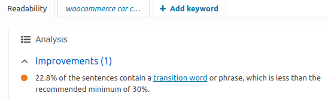

Czym są transition words?
Szukasz wyjaśnienia transition words po polsku? Są to słowa takie jak ‘most importantly’, ‘therefore’, czy też ‘besides that’. Poprawne używanie tego typu słów powoduje, że Twój tekst staje się bardziej czytelny. Wynika to z faktu, że nadają one kierunek treści.
Yoast SEO prowadzi analizę pod kątem wykorzystania transition words w tekście. Jeśli używasz go, pewnie znasz ten ekran:

Lista transition words jest długa, jednak warto się ich nauczyć. Dzięki nim stworzysz chętniej czytane, bardziej przystępne treści.
Przygotowałem dla Ciebie proste narzędzie, dzięki któremu w szybki sposób przyswoisz transition words po polsku.
lub zobacz pełną listę transition words